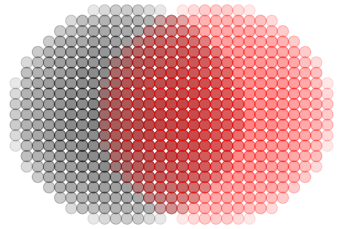
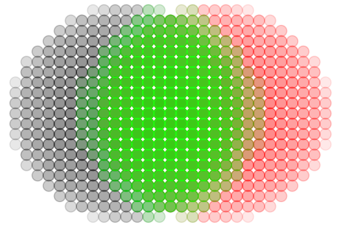

Background
The coi package is a small tool to calculate some
metrics from terrestrial laser scanning (TLS) point clouds. The name
coi stands for “crown overlap index” and is one of the
metrics that can be extracted with the package. The COI is calculated as
described in Täuber et
al. (in prep.)
It was inspired by an earlier index called crown complementarity
index (CCI), which was presented by Williams et
al. (2017). The CCI can also be calculated by the coi
package.
Finally the package can also extract the box dimension, a structural complexity metric as described in Seidel (2018).
The pt_cld class
All point cloud operations in coi use the
pt_cld class — a lightweight S3 wrapper around a 3-column
numeric matrix with columns x, y,
z. You can create one from a data.frame, matrix, or
individual vectors:
library(coi)
# From a data.frame (e.g. as returned by rlas::read.las())
df <- data.frame(x = runif(100), y = runif(100), z = runif(100))
cloud <- as_pt_cld(df)
cloud
#> pt_cld with 100 points
#> x: [0.007, 0.997]
#> y: [0.004, 1]
#> z: [0.017, 0.984]
# Access coordinates
head(cloud$x)
#> [1] 0.080750138 0.834333037 0.600760886 0.157208442 0.007399441 0.466393497All package functions require pt_cld objects as input
and will produce clear errors if you pass a plain matrix or data.frame
instead.
COI calculation
There are two ways to calculate COI with this package. One is meant to be used in exploratory analysis and shown directly below. If you are sure which parameters you want to use there’s a all-in-one function at the end of this chapter.
Exploratory COI calculation using compute_coi()
First we attach the library and generate two artificial point clouds
of spheres with a radius of 1 m a voxel resolution of
0.01 m and centers with a 0.5 m distance on
the x-axis.
library(ggplot2)
sphere1 <- gen_sphere(
r = 0.5,
res = 0.01,
center = c(-0.2, 0, 0)
)
sphere2 <- gen_sphere(
r = 0.5,
res = 0.01,
center = c(0.2, 0, 0)
)Next, we voxelize the point clouds to a common resolution. Our artificial spheres already have a voxel resolution. But if you work with real-world TLS data the resolution will be variable across the point cloud. For the algorithms to produce meaningful data we need a voxelised cloud.
We can now take a look at our two voxelised spheres.
sphere1_v <- voxelize(
cloud = sphere1,
res = 0.05
)
sphere2_v <- voxelize(
cloud = sphere2,
res = 0.05
)
spheres <- ggplot() +
theme_void() +
geom_point(
data = as.data.frame(sphere1_v),
aes(x, y),
size = 3,
color = "black",
alpha = 0.03
) +
geom_point(
data = as.data.frame(sphere2_v),
aes(x, y),
size = 3,
color = "red",
alpha = 0.03
)
spheres
Now we will extract the interaction point cloud of our spheres using
the extract_interaction function. For this we will need to
define d_max. Here we choose 0.1 m. Then we
can add the interaction cloud to our plot.
The returns = "cloud" argument ensures that the value of
the function is a point cloud which we can use for plotting.
d_max <- 0.1
interaction_cloud <- extract_interaction(
cloud_i = sphere1_v,
cloud_j = sphere2_v,
d_max = d_max,
returns = "cloud"
)
spheres +
geom_point(
data = as.data.frame(interaction_cloud),
aes(x, y),
size = 3,
color = "green",
alpha = 0.03
)
With this interaction cloud, the chosen d_max and the total size of
both interacting clouds, we can now calculate the COI using the
compute_coi function.
However for compute_coi we don’t need the entire
interaction cloud, just a 1-D vector of the individual points’
distances. For this we re-run extract_interaction with
returns = "distances".
interaction_distances <- extract_interaction(
cloud_i = sphere1_v,
cloud_j = sphere2_v,
d_max = d_max,
returns = "distances"
)
total_size <- nrow(sphere1_v) + nrow(sphere2_v)
compute_coi(
distances = interaction_distances,
size_weight = total_size,
d_max = d_max
)
#> [1] 0.5111444All-in-one COI calculation using coi()
The entire process above is very useful if you first want to test out
different values for vox_res and d_max, and
inspect the interaction clouds before running the whole pipeline on your
data. However once you found suitable values you can skip all this and
use the simple coi function to do all this in one step.
coi(
cloud_i = sphere1,
cloud_j = sphere2,
d_max = d_max,
vox_res = 0.05
)
#> [1] 0.5111444CCI calculation
For the CCI we again investigate how two point clouds interact. We
will need our two spheres again. We will create two pairs of spheres a
and b to demonstrate how the cci reacts to volume differences between
the interacting clouds. In a both spheres will have a radius of
2 m. In b one will have a r of 2 m and the
other 3 m.
sphere1_a <- gen_sphere(
r = 2,
res = 0.05,
center = c(0, 0, 0)
)
sphere2_a <- gen_sphere(
r = 2,
res = 0.05,
center = c(0, 0, 0)
)
sphere1_b <- gen_sphere(
r = 2,
res = 0.05,
center = c(0, 0, 0)
)
sphere2_b <- gen_sphere(
r = 3,
res = 0.05,
center = c(0, 0, 0)
)For CCI there is currently only exists the all-in-one function
cci, which makes the calculation super easy. We just need
the size of the vertical strata and the type of hull for each layer.
Usually concave hulls are more exact in natural contexts
(though they sometimes have problems). But since we look at spheres here
convex hulls are totally fine. In the resulting values we
will see that a has a cci = 0 because the two clouds are
exactly homogenous in each vertical layer, while b has a much higher
cci.
Box dimension calculation
Finally we can extract the box dimension as described in Seidel (2018). Once again we will use two spheres with differing sizes. However, for simple geometric shapes like a sphere the Box dimension will always produce higher values for larger shapes with more points. The real magic of the parameter only shines in natural and fractal shapes like trees.
sphere_a <- gen_sphere(
r = 0.5,
res = 0.05
)
sphere_b <- gen_sphere(
r = 1,
res = 0.05
)
threshold <- 0.1
boxdim(
cloud = sphere_a,
threshold = threshold,
vox_res = NULL,
warnings = FALSE
)
#> [1] 2.272419
boxdim(
cloud = sphere_b,
threshold = threshold,
vox_res = NULL,
warnings = FALSE
)
#> [1] 2.367149